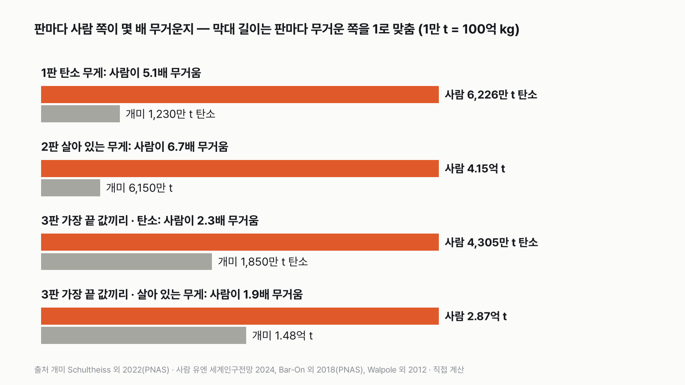
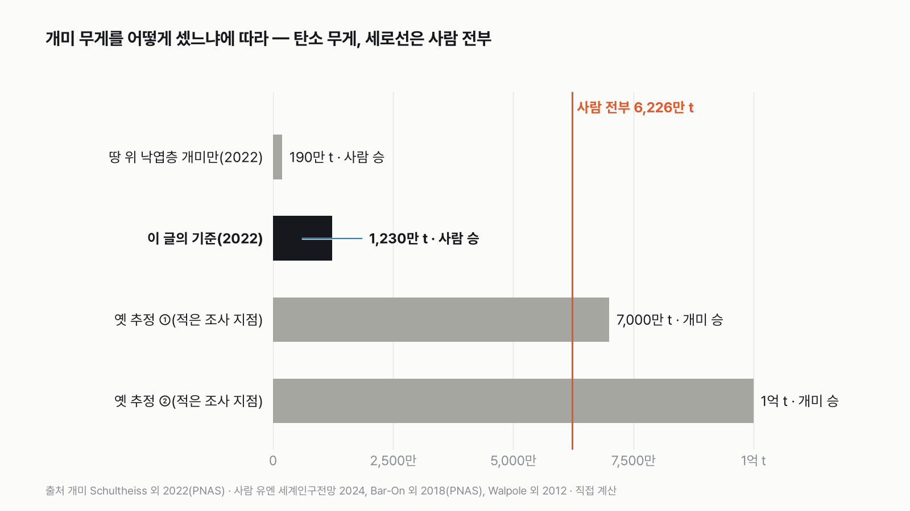
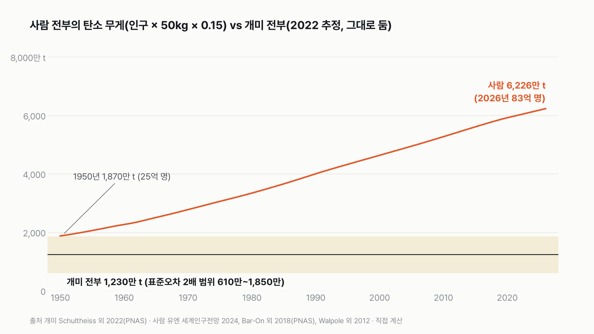
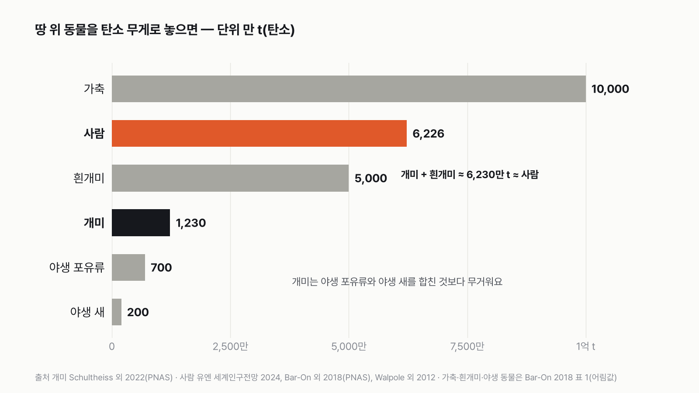

지구의 개미 전부 vs 사람 전부, 어느 쪽이 더 무거울까
결과를 보기 전에 먼저 골라 주세요. 투표하면 독자 예상과 데이터 결과를 나란히 보여 드려요.
독자 투표
3줄 요약
- "개미를 다 모으면 사람만큼 무겁다." 과학책과 인터넷에 자주 나오는 말이에요.
- 지구에 사는 개미를 전부 저울 한쪽에, 사람 83억 명을 다른 쪽에 올리면 정말 그럴까요?
- 세 가지 저울로 재 봤어요. 투표하면 결과가 바로 아래에 열려요.
조건과 규칙
- 개미는 지구에 사는 개미 전부예요. 땅 위와 나무 위에서 조사로 센 개미를 바탕으로 한 2022년 논문의 추정을 써요.
- 사람은 2026년 세계 인구 전부예요. 아이와 어른을 모두 넣어요.
- 무게는 세 판으로 재요. 물기를 쫙 뺀 몸의 탄소만 잰 무게, 물까지 넣은 살아 있는 무게, 그리고 두 추정의 범위 끝 값끼리 붙인 판이에요.
결과 요약
3판 3승 0패 → 최종 사람 승
- 탄소 무게로 사람이 개미의 5.1배, 살아 있는 무게로 6.7배 무거워요.
- 두 추정의 범위를 넓게 잡아 가장 끝 값끼리 붙여도 사람이 1.9배 이상 무거워요. "개미 무게가 사람과 같다"는 말은 측정 근거가 없는 옛 어림이에요.
- 대신 개미 전부에 흰개미 전부를 더하면, 탄소 무게가 사람 전부와 거의 같아져요.
그래서? 개미는 수로는 이기고 무게로는 져요. 그래도 개미 전부는 야생 포유류와 야생 새를 합친 것보다 무거워요.
독자 예상 vs 데이터 결과
지구의 개미 전부 vs 사람 전부, 어느 쪽이 더 무거울까?
데이터로 보면 사람 전부. 탄소 무게로 사람이 5.1배, 살아 있는 무게로 6.7배 무거워요. 개미가 이기려면 지금 추정보다 5배 넘게 많아야 해요.


숫자 두 개로 줄이면 이래요. 몸무게 50kg인 사람 한 명과 같은 무게가 되려면 개미가 약 1,600만 마리 필요해요. 그런데 지구에는 사람 한 명당 개미가 약 240만 마리뿐이에요. 무게로는 7kg 안팎이에요.
| 판 | 개미 전부 | 사람 전부 | 승자 |
|---|---|---|---|
| 1판 탄소 무게 | 1,230만 t | 6,226만 t | 사람(5.1배) |
| 2판 살아 있는 무게 | 6,150만 t | 4.15억 t | 사람(6.7배) |
| 3판 가장 끝 값끼리 · 탄소 | 1,850만 t | 4,305만 t | 사람(2.3배) |
| 3판 가장 끝 값끼리 · 살아 있는 무게 | 1.48억 t | 2.87억 t | 사람(1.9배) |
| 최종 | 3판 3승 0패 → 사람 승 |
이 규칙과 가정이면 최종 승자는 사람이에요. 세 판 모두 사람이 이겼고, 가장 아슬아슬한 판에서도 1.9배 차이가 났어요. 무승부 기준(1.1배)에 가까운 판은 없었어요. 다만 세 판은 같은 개미 추정 하나를 세 가지 저울로 잰 거라, 사실상 한 번의 비교예요. 저울을 바꿔도 결과가 흔들리지 않는다는 걸 보여 주는 판이에요.
1판 탄소 무게: 사람 승(5.1배)
탄소 무게는 몸에서 물기를 쫙 빼고 남은 몸 가운데 탄소만 잰 무게예요. 생물마다 몸에 든 물의 비율이 달라서, 생물학자들은 이 단위로 무게를 견줘요. 이렇게 재면 개미 전부는 1,230만 t, 사람 전부는 6,226만 t이에요. 개미 논문도 같은 결론을 적었어요. 개미 전부의 무게는 "사람 전체 마른 무게의 약 20%"라고요.
승부를 가른 건 한 마리의 무게예요. 일개미 한 마리는 물까지 넣어도 3mg 남짓이에요. 저도 처음엔 2경이라는 숫자를 보고 개미가 이길 줄 알았어요. 그런데 사람 한 명을 채우려면 개미 1,600만 마리가 든다는 걸 계산해 보고 생각이 바뀌었어요. 2경 마리를 1,600만 마리씩 묶으면 사람 12억 명분밖에 안 돼요.
2판 살아 있는 무게: 사람 승(6.7배)
저울에 그대로 올리면 물 무게가 들어가요. 사람은 몸의 70%, 개미는 측정된 값으로 60% 안팎이 물이에요. 그래서 살아 있는 무게로 재면 개미 6,150만 t, 사람 4.15억 t으로 사람이 6.7배예요. 생물 무게 논문은 곤충 같은 절지동물에도 사람과 같은 물 70%를 썼어요. 이 값을 쓰면 차이는 1판과 같은 5.1배예요. 어느 쪽을 써도 결과는 같아요.
3판 가장 끝 값끼리: 사람 승(1.9배)
개미 추정에는 오차가 있어요. 논문은 1,230만 t에 표준오차 ±310만 t을 붙였어요. 이건 평균이 얼마나 흔들리는지를 나타내는 값이라 진짜 끝은 아니에요. 그래서 표준오차의 2배를 더한 1,850만 t을 썼고, 개미 몸의 물도 측정된 범위 가운데 가장 많은 75%로 놓았어요. 사람은 아이를 빼고 2005년 성인만 잰 2억 8,700만 t을 썼어요. 이렇게 붙여도 탄소로 2.3배, 살아 있는 무게로 1.9배 사람이 무거워요. 다만 땅속 개미와 알·애벌레처럼 처음부터 세지 못한 개미는 이 판에도 들어가지 않았어요.


개미가 이기려면
개미가 지금 추정의 5.1배는 있어야 비겨요. 넓힌 끝 값으로 잡아도 3.4배는 있어야 해요. 사람 쪽으로 보면 평균 몸무게가 50kg이 아니라 9.9kg이어야 비기고, 인구로는 16.4억 명이면 비겨요. 유엔 자료가 시작하는 1950년 인구가 이미 25억 명이라, 개미 수가 그대로였다면 그때도 사람이 1.5배 무거웠어요. 개미 수가 그동안 그대로였는지는 알 수 없어서, 이 비교는 판정에 넣지 않았어요.
개미가 이기는 숫자가 실제로 나온 적은 있어요. 예전 추정 가운데 탄소 7,000만 t(2020년)과 1억 t(2009년)이 있었어요. 이 값이면 개미가 이겨요. 다만 이 추정들은 개미가 전체 곤충 수의 몇 %인지 가정하거나, 적은 조사 지점을 지구 전체로 넓혀 어림한 값이에요. 2022년 논문은 세계 489개 조사를 모아 처음으로 측정에 기대어 다시 셌고, 그 결과가 1,230만 t이에요.
"개미 무게가 사람과 같다"는 말을 측정으로 확인한 적은 없어요. 같은 호에 실린 논평에 따르면, 개미 수를 처음 책에 적은 것부터 계산 과정이 없는 1983년 어린이 교양서였어요. 그 뒤 논문들의 어림도 1경에서 10경 마리까지 10배나 갈렸어요.


덤: 마릿수는 개미 압승
수로 세면 이야기가 완전히 달라요. 개미 약 2경 마리를 83억 명으로 나누면 한 사람당 약 240만 마리예요. 그 240만 마리를 모으면 살아 있는 무게로 6~12kg, 기본값으로 7.4kg이에요. 몸무게 50kg인 사람의 7분의 1이에요.


그래도 개미는 무거운 동물이에요
개미 전부(탄소 1,230만 t)는 야생 포유류 전부(약 700만 t)와 야생 새 전부(약 200만 t)를 합친 것보다 무거워요. 포유류와 새 가운데 사람보다 무거운 건 사람이 기르는 가축(약 1억 t)뿐이에요. 곤충과 거미 같은 땅 위 절지동물을 다 합치면 약 2억 t으로 사람보다 무거워요.
흰개미를 더하면 사람과 같아져요
흰개미는 이름에 '개미'가 붙었지만 개미가 아니에요. 유전자로 따지면 나무를 먹는 바퀴벌레 무리에서 갈라져 나와, 무리 지어 사는 바퀴벌레예요. 그래서 이 대결에서는 뺐어요. 그런데 생물 무게 논문은 흰개미 전부를 탄소 약 5,000만 t으로 어림하고 "사람과 비슷하다"고 적었어요. 이 어림값을 개미에 더하면 약 6,230만 t으로, 사람 전부(6,226만 t)와 거의 같아져요. 흰개미 값은 한 자리로 반올림한 어림이라 정확히 같다고 할 수는 없어요. 그래도 '개미와 사람이 같다'는 옛말이 흰개미까지 합치면 얼추 맞아떨어지는 건 재밌는 우연이에요.
결국 "개미를 다 모으면 사람만큼 무겁다"는 말은 틀렸어요. 탄소로 재든 살아 있는 무게로 재든, 범위 끝 값끼리 붙여도 사람이 무거워요. 그런데 이름만 개미인 흰개미를 함께 저울에 올리면 그 옛말이 얼추 맞아떨어져요. 옛말은 개미와 흰개미를 한데 묶었을 때만 맞아요.
이 숫자는 어디서 왔나요
출처
기준일 인구는 유엔 세계인구전망 2024(2026년 11월 8일 받음)의 2026년 값이에요. 조건은 2026년 11월 8일, 계산하기 전에 정했어요.
Schultheiss 외 2022,PNAS
- 지구의 개미 수와 무게doi:10.1073/pnas.2201550119원본 보기
개미 약 2경 마리, 탄소 1,230만 t(표준오차 ±310만 t), 일개미 1마리 마른 무게 1.24mg
Bar-On·Phillips·Milo 2018,PNAS
- 지구 생물의 무게 분포doi:10.1073/pnas.1711842115원본 보기
사람을 탄소로 바꾸는 계산법(평균 50kg × 0.15), 가축·야생 동물·흰개미·절지동물 탄소 무게
유엔 경제사회국 인구국
- 세계 인구 (World Population Prospects 2024)원본 보기
2026년 7월 1일 8,300,678,395명(중위 추계), 1950년부터 해마다
Walpole 외 2012,BMC Public Health
- 세계 성인의 몸무게doi:10.1186/1471-2458-12-439원본 보기
2005년 성인 46.3억 명, 2억 8,700만 t
Bujan·Yanoviak·Kaspari 2016,Ecology and Evolution
- 개미 몸의 물 비율doi:10.1002/ece3.2355원본 보기
개미 몸무게 중 물 48~75%
Fayle·Klimeš 2022,PNAS
- 같은 호 논평doi:10.1073/pnas.2214825119원본 보기
개미 추정의 한계, 옛 추정 범위(탄소 500만~1억 t), 첫 개미 수 어림의 출처
Inward·Beccaloni·Eggleton 2007,Biology Letters
- 흰개미의 계통doi:10.1098/rsbl.2007.0102원본 보기
흰개미는 무리 지어 사는 바퀴벌레
어떻게 셌나요
- 개미 수와 무게: Schultheiss 연구진은 세계 489개 조사(땅 위 낙엽층, 땅 위를 돌아다니는 개미, 나무 위 개미)를 모아, 지구의 개미를 약 2경(19.8×10^15) 마리로 추정했어요. 일개미 한 마리의 마른 무게는 평균 1.24mg(534종 측정), 그중 절반이 탄소예요. 둘을 곱하면 탄소 1,230만 t이에요. 같은 곱셈으로 1,228만 t이 나오는 걸 확인했어요.
- 사람 무게: 생물 무게 논문(Bar-On 2018)의 계산법을 그대로 썼어요. 이 논문이 2015년 인구에 곱한 어림 평균 몸무게 50kg(아이 포함), 몸무게 중 물 70%, 마른 무게의 절반이 탄소라서 몸무게의 15%가 탄소예요. 2026년 인구 83억 명을 곱하면 탄소 6,226만 t, 살아 있는 무게 4.15억 t이에요.
- 살아 있는 무게는 탄소를 거꾸로 되돌려 구했어요. 개미 몸의 물은 측정된 범위 48~75% 가운데 60%를 기본으로 뒀어요.
- 가장 끝 값끼리(3판): 개미는 평균에 표준오차 2배를 더한 탄소 1,850만 t에 물 75%를 붙여 가장 무겁게, 사람은 2005년 성인만 잰 2억 8,700만 t으로 가장 가볍게 놓았어요.
- 판정: 판마다 무거운 쪽이 이겨요. 차이가 1.1배 미만이면 무승부예요. 3판은 탄소와 살아 있는 무게 두 가지로 다 재고, 둘 다 이겨야 승이에요.
한계 6가지
이 데이터로 말할 수 없는 것
- "개미 무게가 사람과 같다"는 말은 1990년대에 나온 개미 책의 어림에서 퍼졌다고 알려져 있지만, 그 책은 직접 확인하지 못했어요.
- 개미 추정에는 땅속에 사는 개미, 나무 꼭대기 개미, 알과 애벌레, 여왕개미가 거의 빠져 있어요. 연구진도 그래서 이 값을 "낮게 잡은 추정"이라고 했어요. 이를 다 넣어 5배가 되려면 빠진 개미가 지금 센 개미의 4배는 되어야 해요.
- 반대로 조사 지점이 사람 손이 덜 탄 곳에 몰려 있으면 개미를 많게 셌을 수도 있어요(같은 호 논평).
- 종마다 몸무게가 달라도 연구진은 평균 1.24mg을 썼어요.
- 사람 평균 50kg은 Bar-On이 2015년 인구에 곱한 어림 평균(아이 포함)이에요. 성인 평균은 62kg(2005년)이에요. 사람을 더 무겁게 잡으면 차이는 더 벌어져요.
- 가축·흰개미·절지동물·야생 동물 숫자는 넓은 범위의 어림값이에요. 판정에는 쓰지 않았어요.
다음 대결
대결 다 보기일 vs 가정
일 먼저 vs 가정 먼저, 더 많은 사람이 고른 쪽은?
A일 먼저vsB가정 먼저
투표하러 가기
대결투표했어요해도 그만 승결혼, 해야 한다 vs 해도 그만
결혼, '해야 한다' vs '해도 좋고 안 해도 좋다', 더 많은 사람이 고른 쪽은?
A해야 한다vsB해도 그만
투표하러 가기
대결투표했어요결과: 집 커피커피값, 집 vs 카페
커피값, 집 커피와 카페 커피 중 더 많이 오른 쪽은?
A집 커피vsB카페 커피
투표하러 가기
대결투표했어요영화관 승영화관 vs 집
영화관 vs 집에서 보기(온라인 콘텐츠), 값이 더 많이 오른 쪽은?
A영화관vsB집에서 보기
투표하러 가기
대결투표했어요햄버거 승햄버거 vs 피자
햄버거 vs 피자, 값이 더 많이 오른 쪽은?
A햄버거vsB피자
투표하러 가기
대결투표했어요목욕탕 승목욕탕 vs 찜질방
목욕탕 vs 찜질방, 값이 더 많이 오른 쪽은?
A목욕탕vsB찜질방
투표하러 가기
대결투표했어요택시 승택시 vs 시내버스
택시 vs 시내버스, 요금이 더 많이 오른 쪽은?
A택시vsB시내버스
투표하러 가기
대결투표했어요식당 라면 승사서 끓인 라면 vs 식당 라면
같은 라면, 사서 끓인 것과 식당 라면 중 값이 더 오른 쪽은?
A사서 끓인 라면vsB식당 라면
투표하러 가기
새 글 나오면 받아 보기
피드 리더 앱에 이 사이트 주소를 한 번 넣어 두면, 새 글이 올라올 때 앱에 떠요. 가입이나 메일 주소는 필요 없어요.
받는 법 보기
- 피드 리더 앱을 하나 골라요. 새 글을 모아 보여 주는 앱이에요. 예를 들면 Feedly나 Inoreader가 있어요. 둘 다 무료고 웹·휴대폰에서 써요.
- 앱에서 '구독 추가'(+)를 누르고 아래 주소를 붙여 넣어요.
- 끝이에요. 새 글이 올라오면 앱 목록에 떠요.
https://protofu.github.io/opendata-insight/feed.xmlFeedly를 쓴다면 여기를 눌러 바로 추가할 수도 있어요.